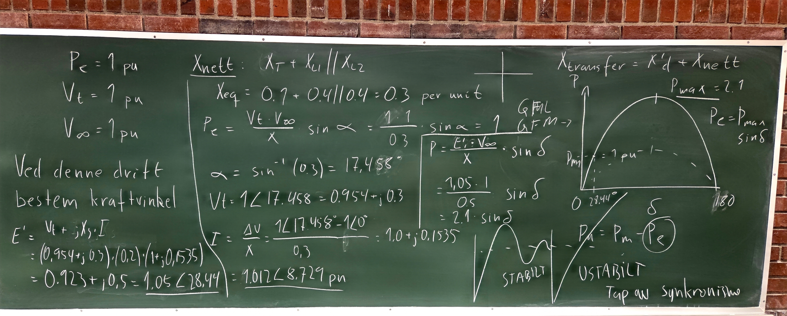
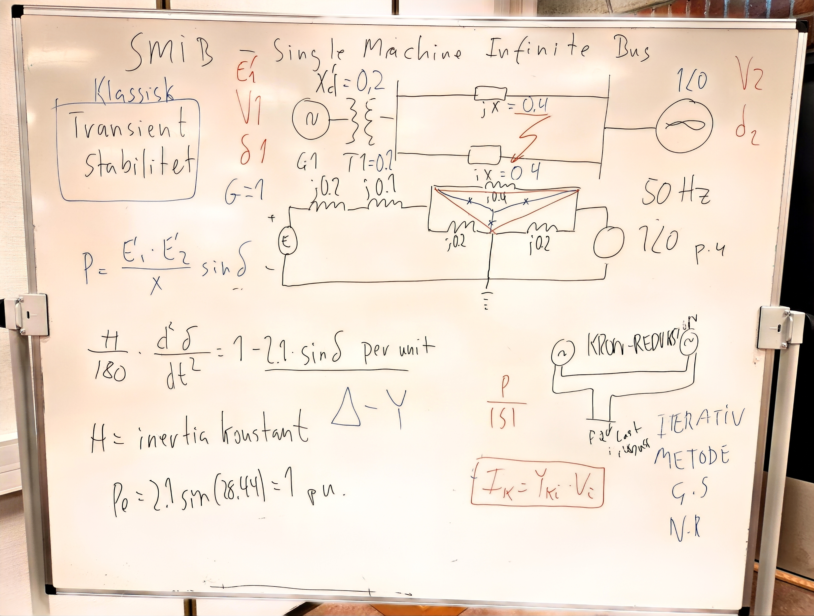
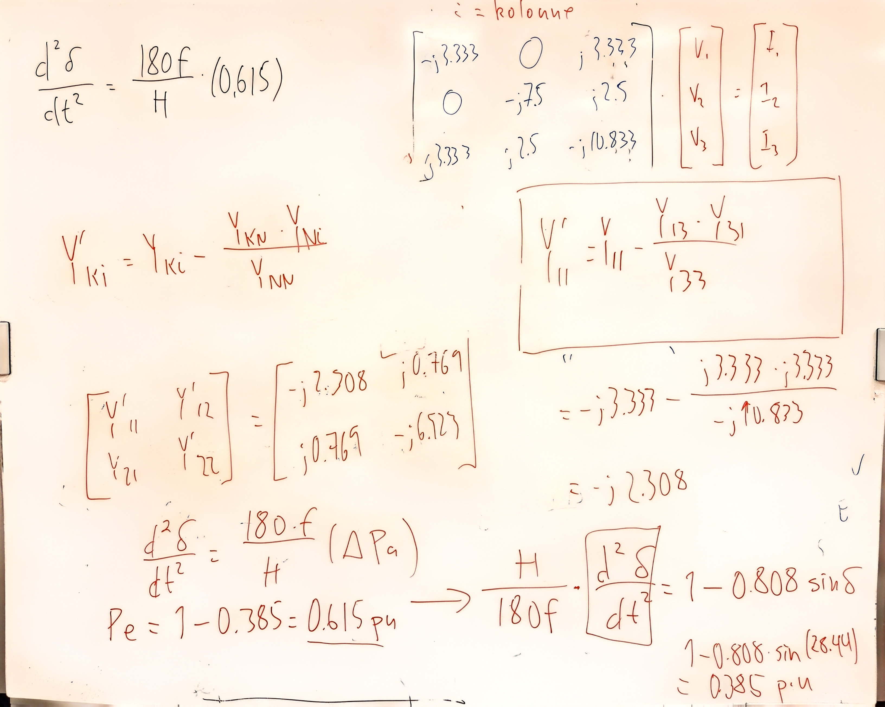

Finne kraftvinkel#
Bestemmelse av effekt-vinkel-ligningen#
En synkrongenerator er koblet til et stort kraftsystem representert ved en uendelig buss gjennom parallelle transmisjonslinjer, modellert som SMIB-modell. Gitte driftsbetingelser er: generatorens aktive effekt \(P_e = 1.0\;\text{pu}\), generatorspenning ved terminalene \(V_t = 1.0\;\text{pu}\), spenning på den uendelige bussen \(V_\infty = 1.0\;\text{pu}\) og generatorens transiente reaktans \(X_d' = 0.20\;\text{pu}\). Alle reaktanser er oppgitt på samme systembase.
Fremgangsmåte#
Løsningen følger disse trinnene: (i) reduser transmisjonsnettet til en ekvivalent reaktans \(X_{nett)\), (ii) bestem referansevinkel, \(\alpha\) mellom terminalspenning \(V_t\) og svingbus \(V_{\infty}\), (iii) bestem strøm, I, ut av generatoren (iv) beregn generatorens transiente indre spenning \(E'\), (iv) bestem den ekvivalente overføringsreaktansen \(X_{transfer}\), og (iv) bruk den klassiske effekt-vinkel-relasjonen
Betydning#
Dette eksemplet illustrerer standardprosedyren som benyttes i transientstabilitetsanalyser: (1) konstruere det ekvivalente nettet, (2) beregne generatorens interne spenning \(E'\), (3) bestemme overføringsreaktansen \(X_{transfer}\), og (4) utlede den tilhørende effekt-vinkel-kurven. Den resulterende effekt-vinkel-ligningen kombineres deretter med svingligningen (swing equation) for å vurdere rotorvinkelstabiliteten etter forstyrrelser.

Generelt resultat#
For et tapsfritt nett kan den elektriske effekten skrives som
der
Resten av eksemplet er viet til å bestemme \(E'\) og \(X_{transfer}\) fra nettdataene, og deretter sette disse verdiene inn i effekt-vinkel-ligningen.
Fullstendig løsning#
Gitte data#
1. Ekvivalent nettreaktans#
To parallelle linjer gir
slik at
2. Terminalspenningens vinkel#
Fra effektligningen
fås
og dermed
Terminalspenningen blir
3. Utledning av effekt-vinkel-ligningen#
Generatorstrømmen er
Spenningen ved generatorterminalene på rektangulær form er
Dermed blir
På polar form:
Transient indre spenning#
Den transiente indre spenningen beregnes som
Setter inn verdiene:
Videre fås
slik at
På polar form:
Total overføringsreaktans#
Mellom den transiente indre spenningen og den uendelige bussen er den totale reaktansen
Effekt-vinkel-ligning#
For et tapsfritt system gjelder
Siden
får vi
Dermed blir effekt-vinkel-ligningen
der \(\delta\) er rotorvinkelen målt i forhold til den uendelige bussen.
Svingligningen og driftspunktet#
Effekt-vinkel-kurven er gitt ved
Den mekaniske tilførte effekten er
Driftspunktet finnes der den mekaniske effekten skjærer effekt-vinkel-kurven:
Dermed får vi
som gir
Dette er generatorrotorens opprinnelige vinkelposisjon før en forstyrrelse inntreffer.
Svingligningen#
Generatorens dynamikk beskrives av
Ved innsetting av
og
får vi
der
\(H\) er treghetskonstanten (MJ/MVA),
\(f\) er systemfrekvensen,
\(\delta\) er rotorvinkelen i elektriske grader.
Likevektspunkt før feil#
Ved driftspunktet \(\delta_0=28.44^\circ\) er
Siden
blir den akselererende effekten
Dermed fås
Rotoren har derfor ingen vinkelakselerasjon, og maskinen befinner seg i stasjonær likevekt før feilen oppstår.
Driftstilstand 2: Trefasekortslutning på en av linjene#
Systemet opererer under de gitte driftsforholdene når en trefasekortslutning oppstår på den ene av linjene i prallell.
Bestem:
Effekt-vinkel-ligningen under feilen.
Den tilhørende svingligningen.
Gitt:
Løsning#
Den transiente indre spenningen til generatoren er funnet:
Det som gjenstår er å bestemme den ekvivalente overføringsadmittansen mellom spenningskildene.
Busser nummereres som vist i figuren under og bussadmittansmatrisen kan da skrives direkte som

Kron-reduksjon (nodeeliminasjon)#
For å eliminere node \(n\) fra admittansmatrisen benyttes Kron-reduksjon:
\(n\) = node som elimineres
\(k\) = radindeks
\(i\) = kolonneindeks
Den generelle formelen er
Når node 3 elimineres beregnes eksempelvis elementet \(Y_{11}\) som
Setter vi inn verdiene fra admittansmatrisen
får vi
Tilsvarende beregnes de øvrige elementene i den reduserte admittansmatrisen. Resultatet etter eliminering av node 3 blir en \(2\times2\)-matrise som kun beskriver koblingen mellom generatorens interne spenning \(E'\) og den uendelige bussen.
